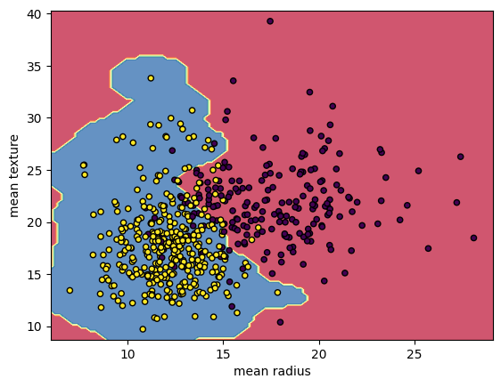

Support Vector Machines: A Robust Classification Technique

Introduction
Support Vector Machines (SVM) are powerful and versatile machine learning models that are widely used for classification tasks. Known for their high accuracy and ability to handle complex datasets, SVMs have become a go-to technique in data science. In this blog, we will delve into the working principles of SVMs, their advantages, and applications across various industries.
What is a Support Vector Machine?
A Support Vector Machine (SVM) is a supervised learning algorithm used primarily for classification tasks, though it can also be used for regression. SVM works by finding a hyperplane that best separates the data into different classes. The "support vectors" are the data points closest to this hyperplane, and they play a crucial role in determining the optimal separating boundary.
How Does SVM Work?
- Hyperplane Selection: SVM searches for the hyperplane that maximizes the margin between the two classes. This hyperplane should have the largest possible distance from the closest data points on either side (the support vectors).
- Support Vectors: Support vectors are the data points that lie closest to the decision boundary. These points are critical because they define the margin and help the SVM classify new data.
- Kernel Trick: When data is not linearly separable, SVM uses a technique called the kernel trick. This method maps the input data into higher-dimensional spaces, where it becomes possible to find a separating hyperplane.
- Maximizing the Margin: The larger the margin, the better the generalization ability of the model. SVM aims to find the hyperplane with the maximum margin to minimize classification errors.
Key Features of Support Vector Machines
- Effective in High-Dimensional Spaces: SVMs are particularly effective when the number of dimensions (features) is large.
- Memory Efficient: SVMs use a subset of training points (the support vectors) to define the hyperplane, making them memory efficient compared to other models.
- Robust to Overfitting: SVMs have a built-in mechanism to prevent overfitting by focusing on maximizing the margin between classes.
- Works Well with Non-Linear Data: Using the kernel trick, SVM can effectively handle non-linearly separable data.
Applications of Support Vector Machines
- Text Classification: SVMs are widely used in Natural Language Processing for tasks like spam detection and sentiment analysis.
- Image Recognition: SVMs classify images based on pixel values or learned features.
- Bioinformatics: SVMs are used for gene expression classification and medical diagnosis.
- Financial Market Prediction: SVMs predict future trends and detect fraud in financial markets.
- Speech Recognition: SVMs are applied for speaker recognition and speech-to-text systems.
Challenges of Support Vector Machines
- Choosing the Right Kernel: Selecting the right kernel function significantly affects the model’s performance.
- Scalability: SVMs can be computationally expensive for large datasets.
- Parameter Tuning: Careful tuning of parameters like the regularization parameter and kernel type is crucial.
- Sensitivity to Noisy Data: SVMs can be sensitive to noisy or mislabeled data, requiring careful data cleaning.
Conclusion
Support Vector Machines are a powerful and flexible tool for classification and regression tasks. Their ability to handle high-dimensional, non-linearly separable data, along with their robustness against overfitting, makes them a go-to choice in many fields, from text classification to image recognition and beyond. Despite some challenges, SVMs remain one of the most reliable and accurate machine learning models in use today.